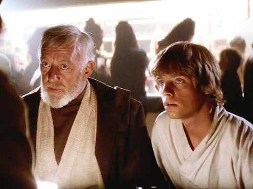
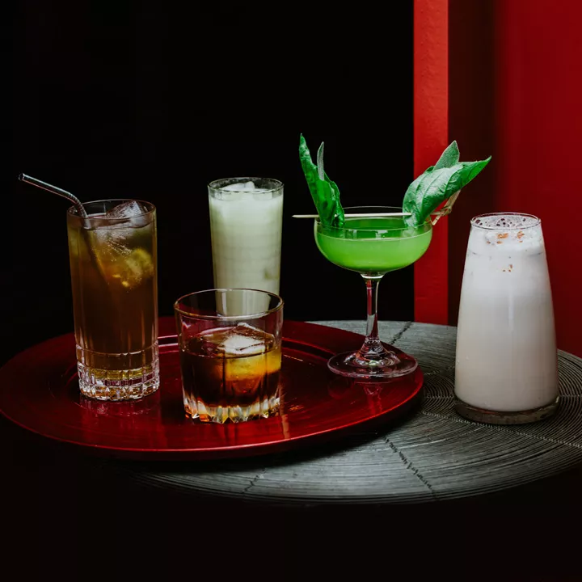
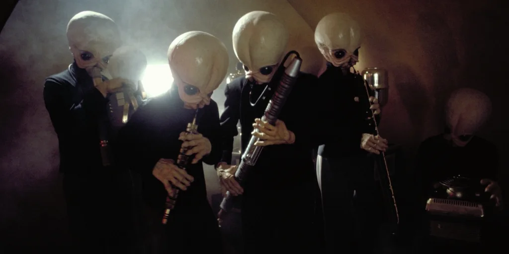
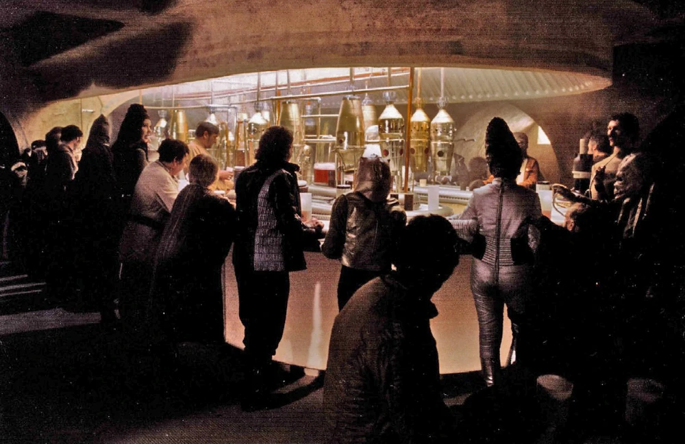

Step into our cantina and immerse yourself in the vibrant atmosphere of a galaxy far, far away. Our cantina is renowned for its eclectic mix of patrons, from friendly aliens to shady outlaws, creating an atmosphere that is both thrilling and intriguing. Rub shoulders with the scoundrels, rebels, and bounty hunters who call this place their second home. You never know who you might encounter or what tales they have to tell.
As you enjoy the ambiance, indulge in an impressive array of exotic beverages inspired by the far reaches of the Star Wars universe. Savor the flavors of our signature concoctions, crafted with a blend of local Tatooine spirits and intergalactic ingredients that are sure to satisfy even the most discerning palate. From the Jedi Mind Trick, a mysterious and mesmerizing elixir, to the smoky depths of the Sith Saber, our bartenders are skilled in the art of mixology, creating unforgettable libations for every adventurer.
And let's not forget the heart and soul of our cantina—the legendary house band, Figrin D'an and the Modal Nodes. Their interplanetary fusion of exotic instruments and pulsating beats is out of this world! Whether you're tapping your feet to the rhythm or dancing the night away, their performances will take you to a galaxy far, far away.
So, join us at the Mos Eisley Cantina, where the spirit of adventure meets the allure of the unknown. Experience the thrill of being part of a timeless Star Wars legend, where the drinks flow, the music enchants, and the camaraderie of fellow travelers creates unforgettable memories. May the Force be with you as you relax an unwind in a uniquely Star Wars style.
